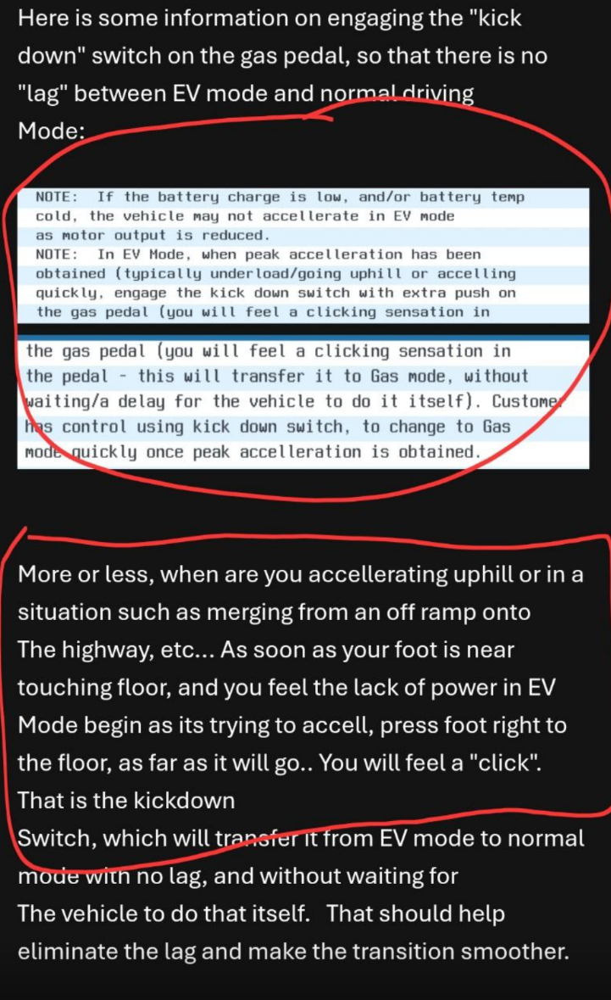

They knew. They lied. They walked away. This is our story.
In December 2024, we made an emergency service appointment and brought our Mazda CX-90 to Century Mazda (owned by Century Auto Group) to address two serious safety concerns:
While the vehicle was in their care, it was damaged in a collision caused by their lot attendant with another yet to be delivered new customer car. That customer was told, Century Mazda decided not to tell us.
Not only didn't they tell us, they actively tried to mislead us about how it happened, only after we contacted them and traced the damage back to them.
They blamed another customer and returned our vehicle — still unsafe, now damaged, and still unfixed, they didn't even road test it.
We only discovered the truth after demanding video footage and threatening legal action.
They told the other customer the truth.
They didn’t tell us — the victims.
This wasn’t a mistake. It was a cover-up — condoned by senior leadership, who were involved at every step.
Jayson Pearce, Director of Operations for Century Auto Group, was fully informed on all of the issues and eventually simply chose not to respond. He had every opportunity to make things right. He said nothing in the end.
Michael MacGillivray, listed as ownership of Century Auto Group, was contacted directly. Instead of taking action personally, he forwarded our complaint to Jason, who eventually decided we weren't worth the time to deal with, after his dealership, did the same.
At Mazda Canada, Jason, not to be conused with Jayson from CAG — the most senior technical representative assigned to our case — refused to speak with us by phone, choosing instead to hide behind email and recommend we trade in our vehicle. Even Mazda Canada CEO David Klan, incoming CEO Amy Fleming, and global compliance lead Makota Yoshihara were all looped into emails. None of them chose to respond.
Jenny, our Mazda Canada file owner, told us plainly that Mazda cannot force its dealers to help customers, even when there's a safety issue. That’s not just negligent. It’s corporate abandonment. Its also not true, ands its also not in line with Mazda's own doucmented corporate ethics, which Makoto is in charge of.
Mazda Canada is not a bystander. It is a direct enabler of Century Mazda’s misconduct — standing silently behind a dealer that lied, damaged our vehicle, returned it unsafe, and then cut off contact entirely. This is Mazda in live time, we suggest, especially if you are a young family seeking safe vehicle, and a manufacturer that will stand behind their product, you shop else where.
We missed birthdays.
We skipped dance practice.
We canceled road trips.
We parked the car.
We stopped letting our children ride in it.
When we asked for alternate transportation, Mazda told my wife — a mother of two small children — to drive the unsafe vehicle back herself for further diagnosis. They can't fix it after 7 months, when does enough, become enough?
Mazda didn’t just sell us a vehicle.
They sold us risk to our family — and then ran from it.
Text messages confirming the dealership admitted the collision was caused by their lot attendant. Originally, they falsely blamed another customer. Not the "I watched it again" comment, anyone watching this can plainly see it contradicts everything we were told from the start.
Screenshot of the accident. Mazda never informed us — we had to threaten to get the truth. Mazda did inform the other customer. Eventually when admitting what happened, Mazda tried to guilt us by using the lot attendants "disabilities" meanwhile the lot attendant has a long history of damaging customers car and senior leadership was still ok letting them drive customers cars.

Mazda’s official Technical Service Bulletin (TSB No. 09-037/24), which the dealer tried to ignore until we offered to pay out-of-pocket. The asked in January to pay and order the part. In early March, the dealer still wouldn't order it. Mazda Canada doesn't have an issue with this, as Mazda dealers are independant.
Repeated escalation attempts to Jayson Pearce, Director of Operations at Century Auto Group, were eventually met with silence.
Mazda knew this was a family safety issue, and would wait more than two weeks to reply, claiming the only had 1 staff. If Centruy Mazda chooses to only have 1 staff member on service, thats thier issue, respond to messages.

Mazda's technical advice? Floor the gas pedal, let up slightly, then floor it again. This was their workaround for life-threatening acceleration lag. It only works ~20% of the time.
Mazda dealership staff echoed the same technique — a dangerous and unreliable workaround suggested to a family with children in the car. This proves Mazda Canada knows about the issue, and their override doesn't work, and is extremely dangerous in short merge situations, like Halifax, cloverleaf intersections, something Amy Fleming, who used to reside in Nova Scotia, must be well aware of.
Mazda's timing couldn’t be worse — sending a glowing service survey while we were still fighting to be heard. If you can spend the money to program automated service messages that prevent a bad service review, you can spend the money to hire people who respond to service messages in under 2+ weeks, especially safety issues.
Mazda’s own published ethics policy promises transparency, integrity, and accountability. It’s a promise they failed to keep at every level — dealership, corporate, and global. One would think that a family car that is not safe, would be a prioirty to get off the road, not to have the director of dealer operations and service manager actively ignoring messages from the customer hoping it will go away, or worse. Mazda Canada is even OK with me trading it in at a big financial loss, so they can re-profit and sell it to another unsuspecting family. Think about that for a minute. Is that in the spirit of these guidelines, obviously not, but Mazda doesn't enforce them, its just marketing.
Mazda Canada's Tech lead - Jason, the most senior person on our file, refused to call us. Instead, he emailed — suggesting we just trade in the unsafe vehicle and pass the risk to another family. A Mazda Canada-endorsed exit strategy for known safety issues. Mazda thinks as this as a techincal issue, not a family safety issue.
December 2024 – Reported persistent acceleration lag that created dangerous merging highway conditions, especially in colder weather. Was told we had to wait until January for an appointment. January 20, 2025 – Presented Mazda's official Technical Service Bulletin (TSB No. 09-037/24) to Josh, the service advisor at Century Mazda, for water intrusion into the front headlight assembly—a known safety defect that compromises nighttime, fog, and morning visibility. Despite being shown the TSB, Century Mazda initially dismissed the issue, saying it “wasn’t raining enough” to replicate it. Only after I offered to pay for the part out of pocket did Josh agree to order it. At the same time, I left the vehicle for diagnosis of the acceleration lag issue. Despite specifically asking for a road test, Mazda assumed it was a software issue and skipped proper testing. January 22, 2025 – Notified Mazda via their preferred service text line that the acceleration issue was still present. No reply was received until February 10th. January 24 – February 10, 2025 – Called and asked to speak with the General Manager, Brenda West, after noticing body damage that was not present when we dropped the car off but was clearly visible on our home security footage when returned. Mazda initially claimed another customer caused the damage, but after we demanded video evidence and threatened legal action, they admitted their lot attendant caused the damage by hitting our vehicle into a stationary delivery vehicle. Mazda informed the other customer—but not us. Escalated the matter to Century Auto Group (CAG), which owns Century Mazda. The dealership attempted to stonewall any escalation contact, directing us in circles between Century Mazda and a Truro dealership.
We eventually acquired the name and email of the CAG Owner, Michael MacGillivray (michael@centuryauto.ca), and emailed him because Jayson Pearce was not returning messages. No one at the dealership or Truro Bible Hill location would provide Jayson’s direct contact information, despite confirming that he was the appropriate person to speak to. After contacting Michael, Jayson informed us he receives all of Michael’s emails and that it was fine to deal with him directly. We finally received a call back. At this time, we also reminded Mazda that the acceleration issue remained unresolved and would need to be addressed again. February 18, 2025 – Vehicle returned after body repair, with claim that the acceleration issue had been addressed. We were told a Mazda Canada EV technician performed the work. However, the issue persisted. March 4, 2025 – Reported that the issue was still occurring. Service manager Paul Cotter responded and said they were now working with Mazda Canada’s “Field District Technical and Service Managers.” We were asked to drive the vehicle back in for further inspection. March 10–13, 2025 – Requested alternate transportation so my wife would not have to put our children in the unsafe vehicle. Was advised she would still need to drop it off. The service manager was reportedly out sick, causing delays in response. March 18, 2025 – Vehicle dropped off again. Paul, the Atlantic Field Technical Representative for Mazda Canada (not Paul Cotter), road tested the vehicle, then installed updates to the EV to gas mode transition system. Updates reportedly included the powertrain, transmission, vehicle control modules, tuner amps, and connectivity modules. Paul claimed to be satisfied with post-update performance. March 19, 2025 – Before picking up the vehicle, asked whether the TSB part for the flickering headlight had been installed. Was told the part had only been ordered on March 6, despite originally flagging it on January 20 and offering to pay for it. No explanation was provided for the delay. Later in July, Jenny from Mazda Canada claimed the part had been installed on this date, but we have no confirmation or clarity. To this day, we do not know whether the TSB fix was applied. Mazda claims to prioritize safety—yet we have received no clear or trustworthy answer. March 20, 2025 – Picked up the car and asked if Mazda’s field agents had been able to reproduce the issue prior to applying the update. Mazda chose not to reply. March 22, 2025 – Issue presented again. Mazda stopped replying to service chat. April 2, 2025 – Sent a firm message through the chat line after multiple weeks of no reply. Was told only one service advisor had been working. He promised to follow up with the service manager and schedule another diagnostic. That call never came. No emails or calls were returned. Mazda had gone silent again. April 2025 – Century Mazda and CAG had now fully ceased communication. No service contact. No follow-up. No response from Mazda Canada either. At this point, the most senior representatives at the dealership and parent group were aware of the ongoing safety issue, yet opted for silence. Jenny from Mazda Canada later confirmed in July that dealers can “choose who they want to deal with” and that Mazda Canada cannot force them to help a customer. Is this what Mazda calls a customer-first approach? May–June 2025 – Any and all outbound communication from me was ignored by CAG and Century Mazda. Car remained parked. July 16, 2025 – I contacted Mazda Canada directly and spent an hour on the phone detailing the entire situation. I was connected to Jenny, who became my file owner. First, I made clear that Mazda Canada has a responsibility to enforce a minimum standard of conduct with its dealer network, especially when it comes to unresolved and acknowledged safety issues. At the very least, Century Mazda should not be allowed to cut off communication entirely with a Mazda owner whose vehicle has a known safety concern. Jenny stated that Mazda Canada could not force the dealer to act, since they are “independent.” I told her that was unacceptable and contradicted Mazda's own compliance policy and brand control obligations. Second, I informed Jenny that we were not willing to start over at the dealership after 7 months of unresolved issues. We requested a buyback directly from Mazda Canada. That buyback request was not a dealer issue—it was a request for corporate resolution. Jenny said there was nothing she could do and that this was the end of the line. I pushed for escalation. July 30, 2025 – Called Mazda Canada and spoke with Claude, who advised me that my file had been escalated and was now assigned to a new representative, Jason (not Jayson Pearce from CAG). I asked Claude to have Jason call me. Instead, I received an email from Jason later that day. I replied to Jason, advising him that we, unlike Mazda, are actually concerned about the car’s safety and would not be trading it in and passing the problem to another family. Mazda expects us to take a loss on a vehicle that is not safe to drive through a trade-in, allowing another Mazda dealer to resell it and pass the problem to an unsuspecting family. I also advised that we are not going to restart the 7-month process. I asked that my case and email be escalated to Amy Flemming (incoming CEO), David Klan (outgoing CEO), and Makota Yoshihara (Corporate Risk & Compliance – Japan). July 31, 2025 – I hadn't heard back from Jason, so I called Mazda Canada again and spoke with Haley. I explained that Jason hadn’t acknowledged my response and hadn’t spoken with me directly before making his recommendation. I again requested that the email be escalated to Amy, David, and Makota. I received no call or email follow-up from Jason. August 1, 2025 – I called Mazda Canada again during regular hours but was told via auto-response that they were closed. After trying again multiple times, I was finally able to reach someone just after 10 a.m. I spoke with Jenny again, who said Mazda doesn’t take calls until after 10 a.m. on Fridays due to meetings. I suggested they update their phone message to reflect that. I asked to speak to Jason, but she said he typically does not take calls. After a brief hold, Jenny confirmed Jason received my email and told her to let me know that it had been shared with Amy, David, and Makota. Jason was still waiting on “technical notes” from the dealer and said he hoped to have them by the end of the day. If not, he would attempt to call me later that day or Monday next week. After no call later in the day, I called Mazda Canada reached Annie who said I was being unreasonable and Mazda insists I start diagnosis over again, or trade my car, even with the safety issue.